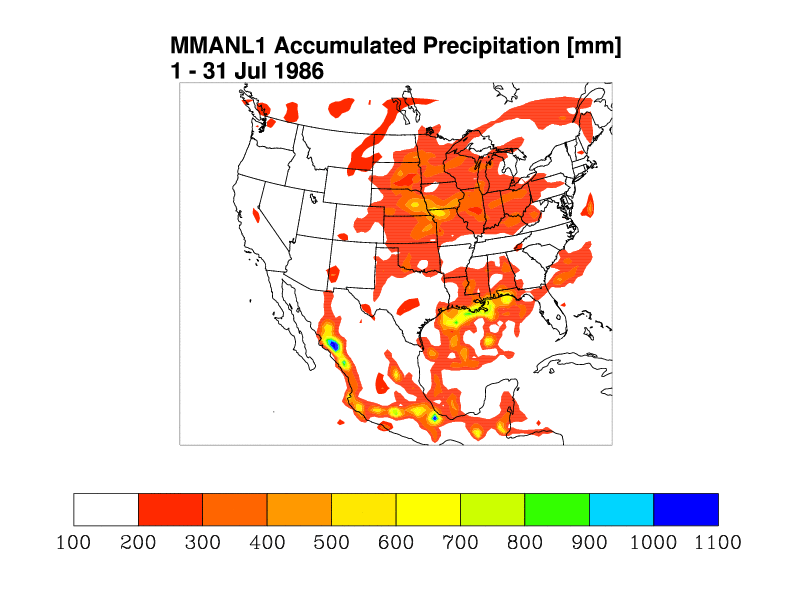
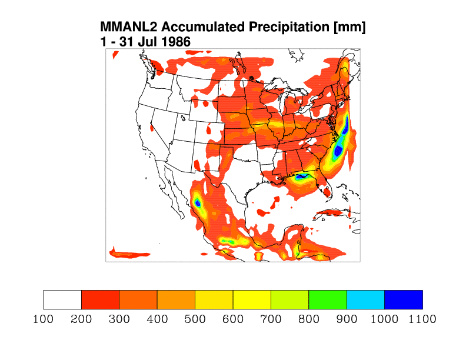
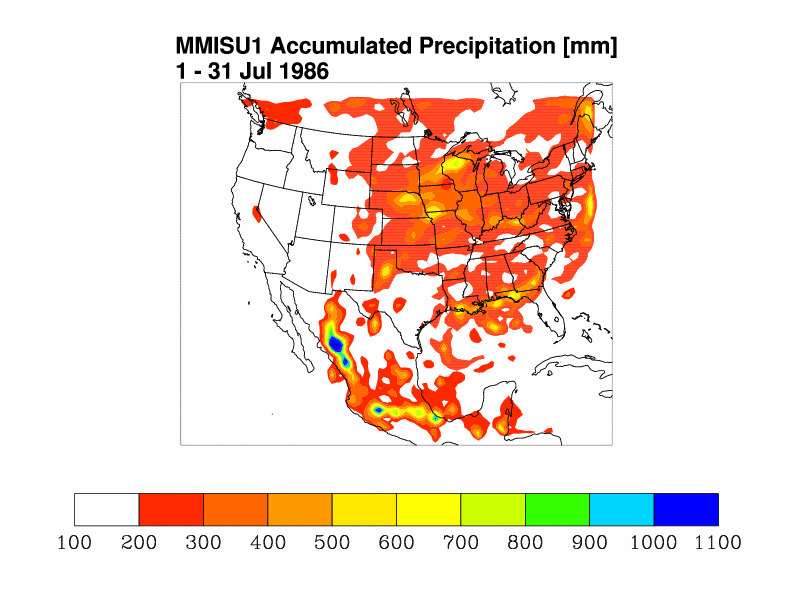
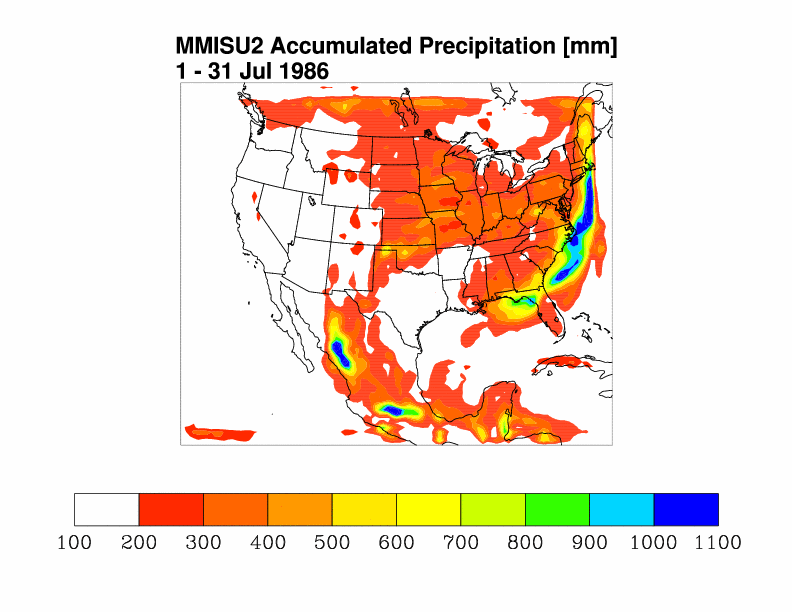

Sensitivity Study:
Computer Architecture and Convective Parameterization
Three 1-month simulations are compared. The simulations are carried out with MM5 and
differ in one of three ways: (1) alternative convective parameterization, (2) different
machine architecture, or (3) both (1) and (2). The simulations are labeled as follows.
- MMANL1: MM5-3.6.1 using Grell convective parameterization scheme.
- MMANL2: MM5-3.6.1 using Kain-Fritsch convective parameterization scheme.
- MMISU1: MM5-3.6.0 using Grell convective parameterization scheme.
- MMISU2: MM5-3.6.0 using Kain-Fritsch convective parameterization scheme.
MM5-3.6.1 is run at Argonne National Lab (MMANL1, MMANL2) on their
Jazz teraflop computer,
which is a 350 node cluster of INTEL processors.
MM5-3.6.0 is run at NCAR (MMISU1, MMISU2) on
blackforest,
a teraflop computer with 293 IBM POWER3 processors.
A list of changes between MM5-3.6.0 and MM5-3.6.1 is found within the NCAR/MMM MM5 support
web pages.
Although MM5-3.6.1 incorporates changes in how Noah LSM processes sea-ice and in components
of the Reisner moist physics parameterization, none of the changes directly influence
the results below.
The results are organized into tables such that computer architecture is identical for results
presented along table rows and convective schemes are identical for results presented in columns.
|
|
Grell Convective Parameterization
|
Kain-Fritsch Convective Parameterization
|
|
Jazz at ANL
|

|

|
|
Blackforest at NCAR
|

|

|